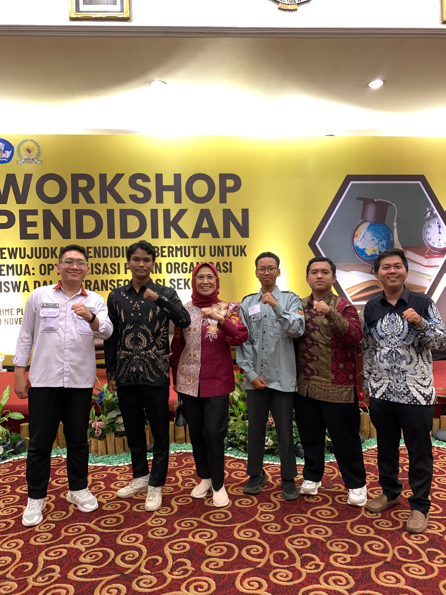
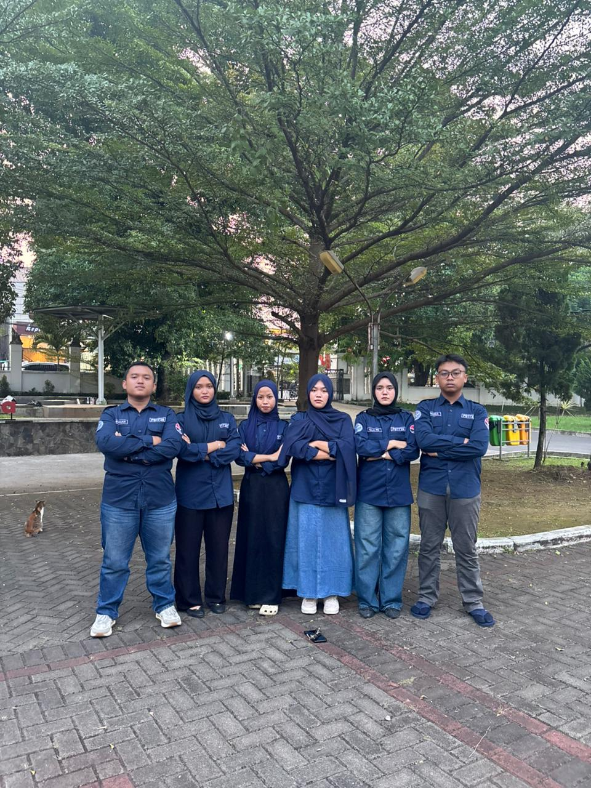

Selamat datang di Galeri Perjalanan saya!
Berikut ini adalah beberapa perjalanan sederhana yang telah dan sedang saya lalui:

Diawal Perkuliahan, saya mulai mencari dan mengikuti berbagai peluang beasiswa sebagai bagian dari perjuangan untuk mendukung pendidikan sekaligus membuka kesempatan baru untuk berkembang.

Di tengah perjalanan perkuliahan, saya kembali mengambil peran dalam organisasi dengan menjadi Dewan Pembimbing FOMPA. Peran ini menjadi kesempatan bagi saya untuk berbagi pengalaman, memberikan arahan, serta mendampingi generasi berikutnya dalam menjalankan organisasi dan berbagai program yang mereka jalankan.

Perjalanan saya berlanjut dengan mengambil peran sebagai Wakil Ketua Pelaksana E-Trip. Posisi ini menjadi kesempatan bagi saya untuk belajar mengelola sebuah kegiatan secara lebih nyata, bekerja berdampingan dengan ketua, serta memastikan setiap bagian kepanitiaan dapat berjalan sesuai dengan tujuan yang telah ditetapkan.

Perjalanan saya kemudian membawa saya ke lingkungan Himpunan Mahasiswa Pendidikan Sistem dan Teknologi Informasi (HIMA PSTI). Saya dipercaya untuk bergabung sebagai Staf PSDO (Pengembangan Sumber Daya Organisasi), sebuah kesempatan untuk belajar lebih dalam mengenai pengelolaan organisasi sekaligus berkontribusi dalam pengembangan anggota dan lingkungan himpunan.


Perjalanan saya berlanjut ketika saya dipercaya dan terpilih menjadi Ketua Angkatan LINTAR dan GAPURA. Amanah ini menjadi pengalaman baru bagi saya untuk belajar memimpin dalam lingkup angkatan, menyatukan berbagai karakter dan latar belakang, serta membangun komunikasi dan rasa kebersamaan di antara anggota.

Perjalanan saya saat ini berlanjut dengan mengemban amanah sebagai Ketua Pelaksana ROTASI 2026 (Regenerasi & Orientasi Mahasiswa PSTI). Bagi saya, ROTASI bukan sekadar sebuah kegiatan, tetapi menjadi ruang untuk belajar merancang, mengelola, dan memimpin sebuah proses kaderisasi bersama tim.